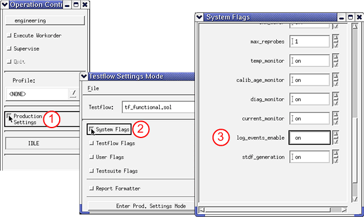

Activating event data logging
About this task
This task describes how to enable logging of test event data to the data log stream.
There are two ways to activate event data logging:
- Option 1: Using data log profiles. This is the easiest and the recommended way to activate event data logging.
- Option 2: Setting the relevant flag directly.
Before you begin
The SmarTest software must be running.
Procedures
Option 1: Using data log profiles
To activate event data logging by using data log profiles you need a data log profile which
sets the log_events_enable flag to on. One such data log
profile is datalog_ON.prf, which is available as a default profile.
Load the data log profile (for example datalog_ON.prf) as described in Loading a data log profile.
Option 2: Setting the relevant flag directly
To activate the event data
logging by setting the flag log_events_enable:
- In the Operation Control window, click Production Settings.
- In the Testflow Settings Mode window, click System Flags.
- In the System Flags window, set the
log_events_enableflag toon.

Results
Event data logging is turned on. All new event data is written to the data log stream.
What to do next
Activating the Event Formatter or Activating the STDF formatter
Functional changes
- Introduced before SmarTest 6.3.2